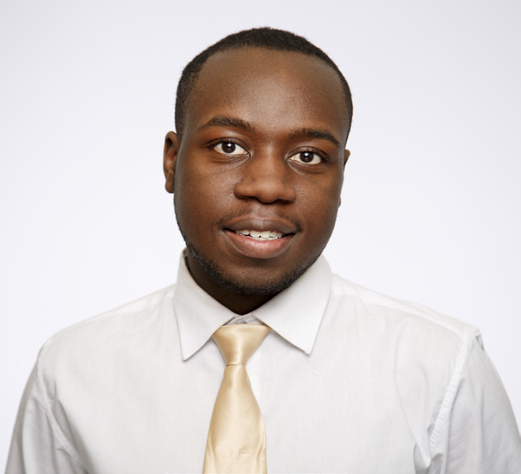

Click picture to toggle bio
Stacy-Ann Dailey, 24, Toronto
Internship: Healthy Minds Canada
I joined NPower with little experience and knowledge in IT, but I was very eager
to learn. NPower’s Technology Service Corps is great because it can help
you acquire your A+ certification, it’s free of cost, has a great location and
classroom, offers site visits to big companies, internship experience and graduation
ceremony at the end. I’ve learned to be more confident and to learn
from my mistakes because that will help me grow and understand the information
I am learning. I have met and learned from great people and wonderful
teachers. The skills and fundamentals that I have learnt such as networking,
hardware, and much more will be with me for years to come. The best is yet to
come and I am very excited for the future.
Click picture to toggle bio
Peggy Lee, 23, Toronto
Internship: Synnex Canada
I always had an interest in technology and was fascinated with the many versatile
functions in which people interact with computers. However, I didn’t understand
the fundamentals of technology. I instinctively grabbed the opportunity
to advance my technological skills when I first heard about the NPower
program from a youth employment center. It was a difficult feat trying to balance
this program while completing my post-secondary degree, but it was
made possible with the aid of peers and staff at NPower. By sharing the same
passion for technology, we enhanced each other’s strengths while mitigating
our weaknesses and pushed forward for the finish line. My plan after NPower
is further improving my skills, staying in contact with my new peers and setting
a prime example for future NPower candidates!
Click picture to toggle bio
Dornel Phillips, 25, Toronto
Internship: Compass Group
Like many Canadians, my journey in Canada began as a newcomer. I came to
Canada with the dream of not only obtaining, but achieving more than I would
in my place of birth. I was born in Guyana and came to Canada at the age of 9.
Over the years, I discovered I was a person who had many interests and technology,
especially new ones, was one of them. Before becoming a member of
the TSC class in Canada, I attended university for business. After graduation,
like many of my peers, I was unable to find proper employment. I started to
work part time with youth which in itself is rewarding. It was at that job I was
introduced to this opportunity. When I started at NPower I knew more than
average about computers, but being part of this program has increased my
knowledge by leaps and bounds. The technical training has been great, but
the networking, site visits, guest speakers and professional development have
also been invaluable. I want to say being part of this program has opened so
many doors for me. Doors I wasn’t always privy to. I plan to further my education,
as well as my presence in the technology and business field as the two go
hand in hand. Thank you NPower, my teacher and classmates.
Click picture to toggle bio
Maria Luisa Aguirre, 26, Scarborough
Internship: CDI Computers
I came into this program without any professional experience or education in
technology. I had been working on a casual, part time basis at the TTC at the
time, and I wasn’t even sure if it was a program for me because it was completely
new. But the challenge of learning about technology and the tools we
use every day was very intriguing. I worked hard to learn what I could and am
very happy with my decision to join this program. In the end, I met great people,
learned new skills and now have full-time employment at CDI Computers
as a Bilingual Customer Service Rep. I have a newfound interest in learning
and working in technology and plan to continue learning by going to Seneca
College in computer programming. I am excited to be in my new career and
look forward to what there is for me in the future.
Click picture to toggle bio
Vanessa Jasmine Aguirre-Orellana, 23, Scarborough
Internship: Office of the Vice President, Research and Innovation, Ryerson
Before this program, I was working part-time as a flower vendor and occasional
childcare provider. I had very little experience in technology other than
taking some courses in high school. Now that I’m in this program and getting
back into it, I look back and wonder why I never pursued an education in technology.
I really enjoy what I’ve been learning and hope to continue learning
more. I also am grateful for the internship experience, where I am finally putting
into practice the theory we’ve been learning. I really found this program
to be beneficial and hope it can continue on to other young adults.

Click picture to toggle bio
Shane Falconer, 20, Toronto
Internship: TD
Before attending NPower I was in college but, for many reasons, I couldn’t
continue my studies. I’ve always had an interest in technology. Ever since I was
a child, I remember days where I would just open computers, take everything
out and try to fix everything through trial and error. From there I decided that
technology was something I was really interested in. One day I received an
email from an old guidance counselor about NPower and instantly thought to
myself “This would be a great opportunity for me” so I took the chance and
it’s been great so far. I can’t wait for what the future holds.